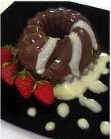

Puding Coklat Double Cream Saus Vanilli

Bahan:
- 2 bungkus agar-agar putih
- 250 gram coklat blok, serut, tim sampai leleh
- 250 gram gula pasir
- 1 lt susu murni
- 500 cc double cream
- 25 gram coklat bubuk, encerkan dengan sedikit air panas
- Vanili secukupnya
Bahan saus:
- 800 cc susu murni
- 100 gram gula pasir
- 1 buah kuning telur
- Vanili secukupnya
Cara membuat:
- Campur semua bahan menjadi satu (kecuali double cream)
- Didihkan diatas api sedang sambil diaduk terus, sampai mendidih
- Setelah mendidih, tuangkan double cream sambil adonan diaduk terus, aaduk sampai rata, angakat dari api.
- Dinginkan sebentar, jangan sampai beku, sampai uap hilang.
- Tuangkan dalam cetakan puding besar, atau yang kecil-kecil, ddinginkan.
Cara membuat saus :
- Kocok lepas merah telur
- Campur susu, gula dan vanili, didihkan dengan api sedang sambil diaduk
- setelah mendidih, tuangkan dua sendok sayur susu ke dalam kocokan telur, campur rata, masukan adonan telur ke dalam susu yang mendidih, aduk-aduk sebentar diatas api.
- angkat dari atas api, aduk terus Vla, sampai agak dingin, supaya Vla jangan pecah.